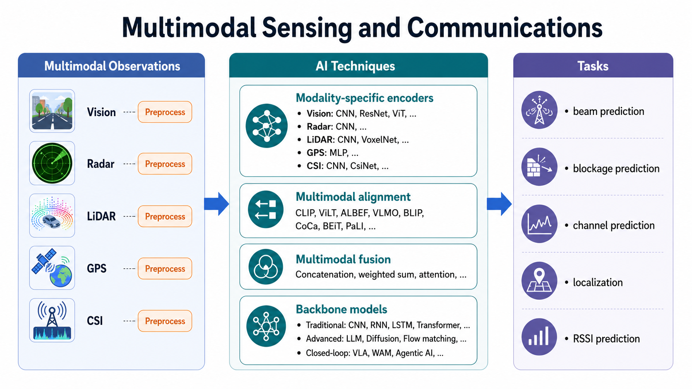

Multimodal Sensing and Communications
Status: Ongoing (2024.12 - Present)

My recent work focuses on sensing-aided communications in high-mobility scenarios, such as vehicle-to-infrastructure (V2I) and unmanned aerial vehicle (UAV) communication systems. The central objective is to leverage the complementary information provided by vision, radar, LiDAR, GPS, and wireless measurements to improve physical-layer performance. Instead of relying solely on historical channel observations or frequent beam training, sensing-aided systems can exploit environmental perception to identify the physical factors driving channel evolution, thereby enabling more proactive, robust, and efficient communication decisions.
How This Research Progressed
1. Starting from a single visual modality
In BeamLLM, I first asked a restrained but important question: without using historical beam indices, AoD, or other extra wireless priors, can future beam prediction be achieved using only historical RGB images observed at the base station? The answer from this work is yes. BeamLLM extracts vehicle bounding-box sequences through object detection and then uses reprogramming and prompting mechanisms to map visual temporal features into a representation space suitable for large-model-style processing, enabling vision-only beam prediction. The key message is that on realistic V2I data, environmental sensing itself already contains useful information about future beam evolution.
2. From single-modal to multimodal modeling
In M2BeamLLM, the research moved from asking whether vision alone is feasible to asking how multimodality can improve robustness. This work introduces four sensing inputs: images, radar, LiDAR, and GPS. Their features are encoded, aligned, and fused, and then a supervised fine-tuning pipeline built on GPT-2 is used for future beam prediction. Compared with BeamLLM, the main contribution is not simply adding more modalities, but showing that under complex dynamic environments, any single modality can fail due to blockage, lighting, or local sensing breakdown, while multimodal complementarity significantly improves accuracy and stability.
3. Modeling beam evolution and deployment efficiency
In the flow-based beam prediction work, the focus moved beyond which modality or backbone to use and toward how to model beam evolution itself. This work argues that discrete sequential predictors such as RNNs and LSTMs tend to accumulate errors over long horizons, while large models, although powerful, are less friendly to edge deployment. Our research therefore models future beam evolution as a vector field in a continuous latent space, and uses segment-wise flow modeling to improve beam prediction accuracy while significantly reducing inference latency.
4. Extending the cross-modal idea to localization
This research line naturally extended from beam prediction to localization. The main observation is that vision provides clear scene and geometric cues but may suffer from missed or false detections, while wireless CSI is also vulnerable to multipath and NLOS effects in complex propagation environments. Neither modality alone is sufficiently robust, but cross-modal alignment and fusion can substantially improve localization accuracy. In that sense, the localization work continues the same core idea: different modalities provide complementary views of the same physical scene, and this complementarity can be converted into more robust communication-aware perception through learned shared representations.
Representative Works
- BeamLLM: Vision-Empowered mmWave Beam Prediction with Large Language Models
Shows that future beam prediction can be achieved using only historical visual observations from the base station, and explores the feasibility of LLM-inspired temporal modeling for this task. - M2BeamLLM: Multimodal Sensing-empowered mmWave Beam Prediction with Large Language Models
Extends beam prediction from a single visual modality to multimodal fusion of image, radar, LiDAR, and GPS, improving robustness and prediction accuracy in complex environments. - Segment-Wise Flow Matching for Vision-Aided mmWave V2I Beam Prediction
Models future beam evolution as a continuous flow, balancing beam prediction accuracy and edge deployment efficiency. - Multimodal Radio and Vision Fusion for Robust Localization in Urban V2I Communications
Extends the cross-modal complementarity idea to CSI-vision fusion for localization, improving accuracy and robustness in complex urban environments.